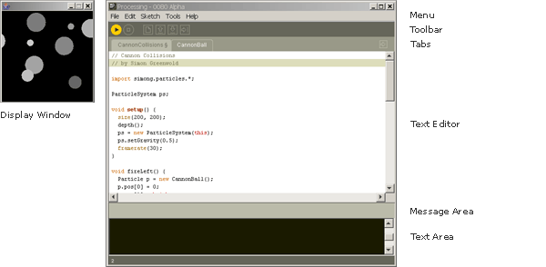

Processing Development Environment (PDE)
Sketchbook
Tabs, Multiple Files, and Classes
Coordinates
Programming Modes
Rendering Modes
Applet Export
Application Export
Applet Security Restrictions
"Present" Features
The Processing Development Environment (PDE) consists of a simple text
editor for writing code, a message area, a text console, tabs for managing
files, a toolbar with buttons for common actions, and a series of menus.
When programs are run, they open in a new window called the display window.

Software written using Processing are called sketches. These sketches are written in the text editor. It has features for cutting/pasting and for searching/replacing text. The message area gives feedback while saving and exporting and also displays errors. The console displays text output by Processing programs including complete error messages and text output from programs with the print() and println() functions. The toolbar buttons allow you to run and stop programs, create a new sketch, open, save, and export:
| Run Compiles the code, opens a display window, and runs the program inside. Hold down shift to Present instead of Run. |
||
| Stop Terminates a running program. |
||
| New Creates a new sketch (project) in the current window. To create a new sketch in its own window, use File → New. |
||
| Open Provides a menu with options to open files from the sketchbook, open an example, or open a sketch from anywhere on your computer. Opening a sketch from the toolbar will replace the sketch in the current window. To open a sketch in a new window, use File → Open. |
||
| Save Saves the current sketch to its current location. If you want to give the sketch a different name, select “Save As” from the File menu. |
||
| Export Exports the current sketch as a Java Applet embedded in an HTML file. The folder containing the files is opened. Click on the index.html file to load the software in the computer's default web browser. Hold down shift to export an application instead of an applet. Note that exporting a sketch will delete the previous contents of the “applet” or “application.xxxx” folders. |
Additional commands are found within the five menus: File, Edit, Sketch, Tools, Help. The menus are context sensitive which means only those items relevant to the work currently being carried out are available.
All Processing projects are called sketches. Each sketch has its own folder. The main program file for each sketch has the same name as the folder and is found inside. For example, if the sketch is named "Sketch_123", the folder for the sketch will be called "Sketch_123" and the main file will be called "Sketch_123.pde". The PDE file extension is an acronym for the Processing Development Environment.
A sketch folder sometimes contains other folders for media files and code libraries. When a font or image is added to a sketch by selecting "Add File..." from the Sketch menu, a "data" folder is created. Files may also be added to your Processing sketch by dragging them into the text editor. Image and sound files dragged into the application window will automatically be added to the current sketch's "data" folder. All images, fonts, sounds, and other data files loaded in the sketch must be in this folder. Sketches are stored in the Processing folder, which will be in different places on your computer or network depending if you use PC, Mac, or Linux and how the preferences are set. To locate this folder, select the "Preferences" option from the "File" menu (or from the “Processing” menu on the Mac) and look for the "Sketchbook location".
It is possible to have multiple files in a single sketch. These can be Processing text files (the extension .pde) or Java files (the extension .java). To create a new file, click on the arrow button to the right of the file tabs. This button gives access to creating, deleting, and renaming the files that comprise the current sketch. You can write functions and classes in new PDE files and you can write any Java code in files with the JAVA extension. Working with multiple files makes it easier to re-use code and to separate programs into small sub-programs.
It can be inconvenient to write a long program within a single file. When programs grow to hundreds or thousands of lines, breaking them into modular units helps manage the different parts. Processing manages files with the Sketchbook and each sketch can have multiple files that are managed with tabs. The arrow button in the upper-right corner of the Processing Development Environment is used to manage these files. Click this button to reveal options to create a new tab, rename the current tab, and delete the current tab. If a project has more than one tab, they can also be hidden and revealed. Hiding a tab temporarily removes that code from the sketch (it will not be compiled with the program when you press Run).
Tabs are intended for more advanced users, and for this reason, the menu that controls the tabs is intentionally made less prominent.
For programmers familiar with Java. When a program with multiple tabs is run, the code is grouped together and the classes in other tabs become inner classes. Because they're inner classes, they cannot have static variables. Simply place the "static" variable outside the class itself to do the same thing (it need not be explicitly named "static" once you list it in this manner). If you don't want code to be an inner class, you can also create a tab with a .java suffix, which means it will be interpreted as straight java code. It is also not possible to use static classes in separate tabs. If you do this, however, you'll need to pass the PApplet object to that object in that tab in order to get PApplet functions like line(), loadStrings() or saveFrame() to work.
Currently, the tabs get truncated when there are too many (Bug 54).
Processing uses a Cartesian coordinate system with the origin in the upper-left corner. If your program is 320 pixels wide and 240 pixels high, coordinate [0, 0] is the upper-left pixel and coordinate [320, 240] is in the lower-right. The last visible pixel in the lower-right corner of the screen is at position [319, 239] because pixels are drawn to the right and below the coordinate.

Processing can also simulate drawing in three dimensions. At the surface of the image, the z-coordinate is zero, with negative z-values moving back in space. When drawing in simulated 3D, the "camera" is positioned in the center of the screen.
Processing allows people to program at three levels of complexity: Basic Mode, Continuous Mode, and Java Mode. People new to programming should begin with the Basic Mode to learn about coordinates, variables, and loops before moving to Continuous and Java modes.
This mode is used drawing static images and learning fundamentals of programming. Simple lines of code have a direct representation on the screen. The following example draws a yellow rectangle on the screen:
size(200, 200); background(255); noStroke(); fill(255, 204, 0); rect(30, 20, 50, 50);
This mode provides a setup() structure that is run once when the program
begins and a draw() structure which by default continually loops through
the code inside. This additional structure allows writing custom functions
and classes and using keyboard and mouse events.
This example draws four circles on the screen and utilizes a custom function
called circles(). The circles() function is not a part of the Processing
language, but was written for this example. The code in draw() only runs
once because noLoop() is called in setup().
void setup() {
size(200, 200);
noStroke();
background(255);
fill(0, 102, 153, 204);
smooth();
noLoop();
}
void draw() {
circles(40, 80);
circles(90, 70);
}
void circles(int x, int y) {
ellipse(x, y, 50, 50);
ellipse(x+20, y+20, 60, 60);
}
This example draws rectangles that follow the mouse position (stored in the system variables mouseX and mouseY). The draw() block runs forever until the program is stopped, thus creating the potential for motion and interaction.
void setup() {
size(200, 200);
rectMode(CENTER);
noStroke();
fill(0, 102, 153, 204);
}
void draw() {
background(255);
rect(width-mouseX, height-mouseY, 50, 50);
rect(mouseX, mouseY, 50, 50);
}
This mode is the most flexible, allowing complete Java programs to be written from inside the Processing Environment (as long as they're still subclasses of PApplet). This mode is for advanced users only and is not really recommended. Using this mode means that any additional tabs will no longer be inner classes, meaning that you'll have to do extra work to make them communicate properly with the host PApplet. It is not necessary to use this mode just to get features of the Java language.
public class MyDemo extends PApplet {
void setup() {
size(200, 200);
rectMode(CENTER);
noStroke();
fill(0, 102, 153, 204);
}
void draw() {
background(255);
rect(width-mouseX, height-mouseY, 50, 50);
rect(mouseX, mouseY, 50, 50);
}
}
Processing currently has four rendering modes. The programs written with Processing can be rendered using the Java 2D drawing libraries, a custom 3D engine called P3D, and through OpenGL using the JOGL interface, and a custom 2D engine called P2D. The rendering mode is specified through the size() function. A large effort has been made to make the Processing language behave similarly across the different rendering modes, but there are currently some inconsistencies.
For more information, see the size() reference entry.
This topic is now discussed on the Processing wiki.
This topic is now discussed on the Processing wiki.
This topic is now discussed on the Processing wiki.
This topic is now discussed on the Processing wiki.